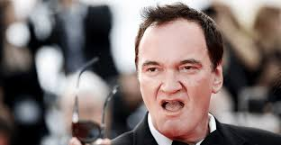
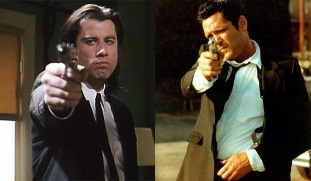
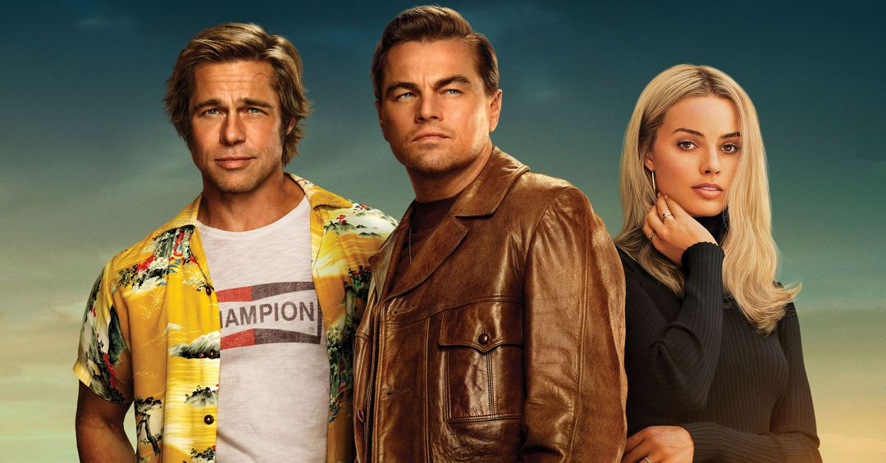

Bienvenido a TarantinoManía
La página dedicada al maestro del cine Quentin Tarantino
La página dedicada al maestro del cine Quentin Tarantino

El aclamado director de cine estadounidense Quentin Tarantino ha sido padre por primera vez a los 56 años de edad, informa TMZ. La modelo y cantante israelí Daniella Pick, esposa del cineasta, ha dado a luz a un niño en Tel Aviv, según estas informaciones. Para Pick, 20 años más joven que el director de Tennessee, también es su primer hijo. Ambos se conocieron en 2009 durante la producción de Malditos Bastardos y se casaron en 2018. El pasado mes de agosto anunciaron que estaban esperando su primer hijo.

Tanto en Pulp Fiction como en Reservoir Dogs nos encontramos que personajes apellidados Vega, Vincent Vega (interpretado por John Travolta) y Mr. Blonde/Vic Vega, interpretado por Michael Madsen. Ambos personajes son, por supuesto, hermanos, por lo que las dos películas tienen lugar en el mismo universo de Tarantino.

'Érase una vez en Hollywood' es el retrato de finales de los 60 del Hollywdood en pleno cambio al que homenajea y da un tirón de orejas en una película excesiva, divertida y con fuego y baños de sangre